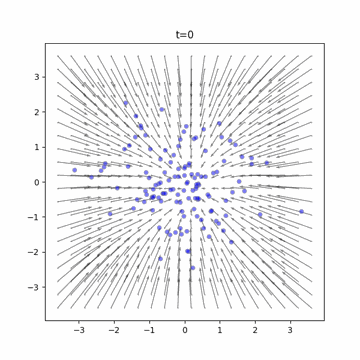
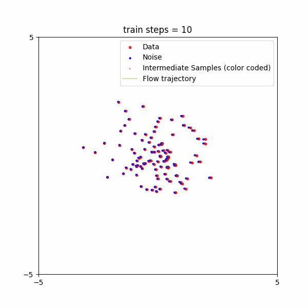

from dataclasses import dataclass
import math
from typing import Dict, Tuple
from matplotlib import pyplot as plt
from sklearn.datasets import make_swiss_roll
import torch
from torch import nn
import torch.optim as optim
from torch.utils.data import DataLoader
from torch.nn import MSELoss
from torch.utils.data import DataLoader
from tqdm.auto import tqdm
from torchdyn.core import NeuralODETraining a Flow Matching Model for 2D Point Generation
In this tutorial, you’ll learn how to train a flow matching model to generate spirals of 2-D points.
Flow matching models provide an alternative approach to generative modeling by learning a continuous transformation that maps noise to structured data. This method is closely related to diffusion models but differs in how clean data transitions to noisy data and vice versa.
This tutorial is similar to the diffusion tutorial. We’ll explore the different components of flow matching models, as well as compare the quality of generated results using different model architectures.
What you’ll learn
- How flow matching works conceptually
- Three different model architectures for implementing flow matching
- How to visualize and evaluate the generated results
- Best practices for training flow matching models
Prerequisites
- Basic understanding of PyTorch
- Familiarity with neural networks and optimization
The Data
Again, we will use the spiral data.
x, _ = make_swiss_roll(n_samples=1000, noise=0.1)
x = x[:, [0, 2]]
x = (x - x.mean()) / x.std()
plt.figure(figsize=(5, 5))
_ = plt.scatter(x[:, 0], x[:, 1], s=10, alpha=0.3, color="Gray")
# _ = plt.axis("off")
Configuration and Dataloaders
Before training the model, we need to define some hyperparameters and create our train and validation dataloaders.
device = torch.device("cuda" if torch.cuda.is_available() else "cpu")
@dataclass
class TrainingConfig:
batch_size: int = 256 # batch size
learning_rate: float = 5e-4 # initial learning rate
weight_decay: float = 1e-6 # weight decay
num_denoising_steps: int = 1000 # number of timesteps
def load_data(config: TrainingConfig) -> Tuple[DataLoader, DataLoader]:
"""
Load the data and return the train and validation dataloaders.
Args:
config: TrainingConfig object.
Returns:
train_dataloader: DataLoader for the training data.
val_dataloader: DataLoader for the validation data.
"""
n = int(1e+6)
x, _ = make_swiss_roll(n_samples=n, noise=0)
x = x[:, [0, 2]]
scaling = 2
x = (x - x.mean()) / x.std() * scaling
x_train = x[:int(n * 0.8), :]
x_val = x[int(n * 0.8):, :]
class SimpleDataset:
def __init__(self, data):
self.data = data
def __len__(self):
return len(self.data)
def __getitem__(self, i):
return self.data[i]
train_dataset = SimpleDataset(x_train)
val_dataset = SimpleDataset(x_val)
train_dataloader = DataLoader(train_dataset, batch_size=config.batch_size, shuffle=True, num_workers=0)
val_dataloader = DataLoader(val_dataset, batch_size=config.batch_size, shuffle=False, num_workers=0)
return train_dataloader, val_dataloader
config = TrainingConfig()
train_dataloader, val_dataloader = load_data(config)
first_batch = next(iter(train_dataloader))
print("batch shape:", first_batch.shape)batch shape: torch.Size([256, 2])The Models
We use the same 3 model architectures as the diffusion models.
In fact, the choice of model architecture mainly depends on the data we are trying to generate. When we are generating images or audio, then a different model architecture needs to be used.
For more information on the differences between the models, please refer to the diffusion tutorial.
Model 1: Simple Concatenation
class Model1(nn.Module):
def __init__(self, hidden_dim=512):
super().__init__()
self.net = nn.Sequential(
nn.Linear(3, hidden_dim),
nn.ReLU(),
nn.Linear(hidden_dim, hidden_dim),
nn.ReLU(),
nn.Linear(hidden_dim, 2),
nn.Tanh(),
)
def forward(self, t, x, **kwargs):
t = t / 1000.
# print("t:", t.shape, "x:", x.shape)
t = t.reshape(-1, 1)
# make sure t is the same shape as x
t = t.expand(*x.shape[:-1], -1)
return self.net(torch.cat([t, x], 1))
model1 = Model1().to(device)
print(f"model params: {sum(p.numel() for p in model1.parameters())}")model params: 265730Model 2: Sinusoidal Time Embedding Concatination
class MLP(nn.Sequential):
def __init__(
self,
in_features: int,
out_features: int,
hidden_features = [64, 64],
):
layers = []
for a, b in zip(
(in_features, *hidden_features),
(*hidden_features, out_features),
):
layers.extend([nn.Linear(a, b), nn.ELU()])
super().__init__(*layers[:-1])
class Model2(nn.Module):
def __init__(self, features: int, freqs: int = 16, **kwargs):
super().__init__()
self.net = MLP(2 * freqs + features, features, **kwargs)
self.register_buffer('freqs', torch.arange(1, freqs + 1) * torch.pi)
def forward(self, t, x, **kwargs):
t = t / 1000.
t = self.freqs * t[..., None]
t = torch.cat((t.cos(), t.sin()), dim=-1)
t = t.expand(*x.shape[:-1], -1)
return self.net(torch.cat((t, x), dim=-1))
model2 = Model2(features=2, hidden_features=[256, 256, 512]).to(device)
print(f"model params: {sum(p.numel() for p in model2.parameters())}")model params: 207362Model 3: Time-Modulated Linear Layers
class TimeEmbedding(nn.Module):
"""
Time embedding module that embeds the time step into a hidden representation.
Args:
hidden_size: the size of the hidden representation.
frequency_embedding_size: the size of the frequency embedding
"""
def __init__(self, hidden_size, frequency_embedding_size=256):
super().__init__()
self.mlp = nn.Sequential(
nn.Linear(frequency_embedding_size, hidden_size, bias=True),
nn.SiLU(),
nn.Linear(hidden_size, hidden_size, bias=True),
)
self.frequency_embedding_size = frequency_embedding_size
@staticmethod
def timestep_embedding(t, dim, max_period=10000):
"""
Create sinusoidal timestep embeddings.
:param t: a 1-D Tensor of N indices, one per batch element.
These may be fractional.
:param dim: the dimension of the output.
:param max_period: controls the minimum frequency of the embeddings.
:return: an (N, D) Tensor of positional embeddings.
"""
# https://github.com/openai/glide-text2im/blob/main/glide_text2im/nn.py
half = dim // 2
freqs = torch.exp(
-math.log(max_period)
* torch.arange(start=0, end=half, dtype=torch.float32)
/ half
).to(device=t.device)
args = t[:, None].float() * freqs[None]
embedding = torch.cat([torch.cos(args), torch.sin(args)], dim=-1)
if dim % 2:
embedding = torch.cat(
[embedding, torch.zeros_like(embedding[:, :1])], dim=-1
)
return embedding
def forward(self, t: torch.Tensor, **kwargs):
"""Forward pass of the module."""
if t.ndim == 0:
t = t.unsqueeze(-1)
t_freq = self.timestep_embedding(t, self.frequency_embedding_size)
t_emb = self.mlp(t_freq)
return t_emb
class TimeLinear(nn.Module):
"""
Time linear layer that applies a linear transformation with time-dependent weights.
"""
def __init__(self, dim_in: int, dim_out: int, num_timesteps: int):
"""
Args:
dim_in: the number of input features.
dim_out: the number of output features.
num_timesteps: the number of timesteps.
"""
super().__init__()
self.dim_in = dim_in
self.dim_out = dim_out
self.num_timesteps = num_timesteps
self.time_embedding = TimeEmbedding(dim_out)
self.fc = nn.Linear(dim_in, dim_out)
def forward(self, x: torch.Tensor, t: torch.Tensor):
x = self.fc(x)
alpha = self.time_embedding(t).view(-1, self.dim_out)
return alpha * x
class Model3(nn.Module):
def __init__(
self, dim_in: int, dim_out: int, dim_hids: list[int], num_timesteps: int
):
super().__init__()
"""
Build a noise estimating network.
Args:
dim_in: dimension of input
dim_out: dimension of output
dim_hids: dimensions of hidden features
num_timesteps: number of timesteps
"""
layers = []
dims = [dim_in] + dim_hids
# Build MLP layers with time-dependent linear layers
for i in range(len(dims)-1):
layers.append(TimeLinear(dims[i], dims[i+1], num_timesteps))
layers.append(nn.ReLU())
# Final layer to output noise prediction
layers.append(TimeLinear(dims[-1], dim_out, num_timesteps))
self.net = nn.Sequential(*layers)
self.num_timesteps = num_timesteps
def forward(self, t: torch.Tensor, x: torch.Tensor, **kwargs):
"""
Args:
x: the noisy data after t period diffusion
t: the time that the forward diffusion has been running
"""
for layer in self.net:
if isinstance(layer, TimeLinear):
x = layer(x, t)
else:
x = layer(x)
######################
return x
model3 = Model3(
dim_in=2,
dim_out=2,
dim_hids=[128, 128, 128, 128],
num_timesteps=config.num_denoising_steps,
).to(device)
print(f"model params: {sum(p.numel() for p in model3.parameters())}")model params: 248330FLow Plan
Similar to diffusion, in flow matching we also design a process that moves clean data points to noise in a way that is easy to reverse. The process to add noise is defined with a flow plan.
A Simple Flow Plan
Given a clean data point \(x_1\) and random noise \(x_0\) with the same shape, we can simply use a straight line to move \(x_1\) to \(x_0\) or vice versa. If we allow for \(T=100\) time steps between \(t=0\) and \(t=1\), the following sequence can be produced:
\[x_t = t \cdot x_1 + (1 - t) \cdot x_0\]
A ConditionalFlowMatcher class is responsible for drawing samples from the flow plan, and computing the conditional flow: a vector/velocity field that moves the data points from \(x_0\) to \(x_1\):
\[u_t(x|x_0, x_1) = x_1 - x_0\]
This is the desired velocity at time \(t\) that we want the denoising model to learn. Since the velocity stays constant with respect to \(x\) and \(t\), the path is a straight line, as we will visualize in a later section.
Below is a simple example of a conditional flow matcher, where each data point is paired with a random noise data point.
Conditional Flow Matcher
from typing import Union
def pad_t_like_x(t, x):
"""Function to reshape the time vector t by the number of dimensions of x.
Parameters
----------
x : Tensor, shape (bs, *dim)
represents the source minibatch
t : FloatTensor, shape (bs)
Returns
-------
t : Tensor, shape (bs, number of x dimensions)
Example
-------
x: Tensor (bs, C, W, H)
t: Vector (bs)
pad_t_like_x(t, x): Tensor (bs, 1, 1, 1)
"""
if isinstance(t, (float, int)):
return t
return t.reshape(-1, *([1] * (x.dim() - 1)))
class ConditionalFlowMatcher:
"""Base class for conditional flow matching methods. This class implements the independent
conditional flow matching methods from [1] and serves as a parent class for all other flow
matching methods.
It implements:
- Drawing data from gaussian probability path N(t * x1 + (1 - t) * x0, sigma) function
- conditional flow matching ut(x1|x0) = x1 - x0
- score function $\nabla log p_t(x|x0, x1)$
"""
def __init__(self, sigma: Union[float, int] = 0.0):
r"""Initialize the ConditionalFlowMatcher class. It requires the hyper-parameter $\sigma$.
Parameters
----------
sigma : Union[float, int]
"""
self.sigma = sigma
def compute_mu_t(self, x0, x1, t):
"""
Compute the mean of the probability path N(t * x1 + (1 - t) * x0, sigma), see (Eq.14) [1].
Parameters
----------
x0 : Tensor, shape (bs, *dim)
represents the source minibatch
x1 : Tensor, shape (bs, *dim)
represents the target minibatch
t : FloatTensor, shape (bs)
Returns
-------
mean mu_t: t * x1 + (1 - t) * x0
References
----------
[1] Improving and Generalizing Flow-Based Generative Models with minibatch optimal transport, Preprint, Tong et al.
"""
t = pad_t_like_x(t, x0)
return t * x1 + (1 - t) * x0
def compute_sigma_t(self, t):
"""
Compute the standard deviation of the probability path N(t * x1 + (1 - t) * x0, sigma), see (Eq.14) [1].
Parameters
----------
t : FloatTensor, shape (bs)
Returns
-------
standard deviation sigma
References
----------
[1] Improving and Generalizing Flow-Based Generative Models with minibatch optimal transport, Preprint, Tong et al.
"""
del t
return self.sigma
def sample_xt(self, x0, x1, t, epsilon):
"""
Draw a sample from the probability path N(t * x1 + (1 - t) * x0, sigma), see (Eq.14) [1].
Parameters
----------
x0 : Tensor, shape (bs, *dim)
represents the source minibatch
x1 : Tensor, shape (bs, *dim)
represents the target minibatch
t : FloatTensor, shape (bs)
epsilon : Tensor, shape (bs, *dim)
noise sample from N(0, 1)
Returns
-------
xt : Tensor, shape (bs, *dim)
References
----------
[1] Improving and Generalizing Flow-Based Generative Models with minibatch optimal transport, Preprint, Tong et al.
"""
mu_t = self.compute_mu_t(x0, x1, t)
sigma_t = self.compute_sigma_t(t)
sigma_t = pad_t_like_x(sigma_t, x0)
return mu_t + sigma_t * epsilon
def compute_conditional_flow(self, x0, x1, t, xt):
"""
Compute the conditional vector field ut(x1|x0) = x1 - x0, see Eq.(15) [1].
Parameters
----------
x0 : Tensor, shape (bs, *dim)
represents the source minibatch
x1 : Tensor, shape (bs, *dim)
represents the target minibatch
t : FloatTensor, shape (bs)
xt : Tensor, shape (bs, *dim)
represents the samples drawn from probability path pt
Returns
-------
ut : conditional vector field ut(x1|x0) = x1 - x0
References
----------
[1] Improving and Generalizing Flow-Based Generative Models with minibatch optimal transport, Preprint, Tong et al.
"""
del t, xt
return x1 - x0
def sample_noise_like(self, x):
return torch.randn_like(x)
def sample_location_and_conditional_flow(self, x0, x1, t=None, return_noise=False):
"""
Compute the sample xt (drawn from N(t * x1 + (1 - t) * x0, sigma))
and the conditional vector field ut(x1|x0) = x1 - x0, see Eq.(15) [1].
Parameters
----------
x0 : Tensor, shape (bs, *dim)
represents the source minibatch
x1 : Tensor, shape (bs, *dim)
represents the target minibatch
(optionally) t : Tensor, shape (bs)
represents the time levels
if None, drawn from uniform [0,1]
return_noise : bool
return the noise sample epsilon
Returns
-------
t : FloatTensor, shape (bs)
xt : Tensor, shape (bs, *dim)
represents the samples drawn from probability path pt
ut : conditional vector field ut(x1|x0) = x1 - x0
(optionally) eps: Tensor, shape (bs, *dim) such that xt = mu_t + sigma_t * epsilon
References
----------
[1] Improving and Generalizing Flow-Based Generative Models with minibatch optimal transport, Preprint, Tong et al.
"""
if t is None:
t = torch.rand(x0.shape[0]).type_as(x0)
assert len(t) == x0.shape[0], f"t has to have batch size dimension, got {len(t)}"
eps = self.sample_noise_like(x0)
xt = self.sample_xt(x0, x1, t, eps)
ut = self.compute_conditional_flow(x0, x1, t, xt)
if return_noise:
return t, xt, ut, eps
else:
return t, xt, ut
def compute_lambda(self, t):
"""Compute the lambda function, see Eq.(23) [3].
Parameters
----------
t : FloatTensor, shape (bs)
Returns
-------
lambda : score weighting function
References
----------
[4] Simulation-free Schrodinger bridges via score and flow matching, Preprint, Tong et al.
"""
sigma_t = self.compute_sigma_t(t)
return 2 * sigma_t / (self.sigma**2 + 1e-8)
Optimal Transport Flow Plan
A simple flow matcher assigns noisy data apoints to clean data points arbitrarily. We can do better than that. One option is to use optimal transport (OT). Intuitively, it pairs up clean data points to close-by noisy data points, to minimize travel. This helps define better flow trajectories, improving training stability and sample quality.
The ExactOptimalTransportConditionalFlowMatcher class implements this idea by computing an OT plan for mapping noisy samples to clean samples.
For context, optimal transport is a technique that finds the best way to transport mass from one distribution to another. In the context of flow matching, it is used to plan the route between the source and target distributions.
Given two point clouds: the clean data points \(\{x_1^i\}_{i=1}^n\) and the noisy data points \(\{x_0^j\}_{j=1}^m\), the OT plan is a matrix \(P\) that describes the best way to transport mass from \(x_0\) to \(x_1\). The matrix \(P\) is defined as:
\[P = \arg \min_{P} \sum_{i,j} c(x_1^i, x_0^j) P_{i,j} \quad \text{s.t.} \quad \sum_{j=1}^m P_{i,j} = 1, \quad \sum_{i=1}^n P_{i,j} = 1\]
where \(c(x_1^i, x_0^j)\) is the cost of transporting mass from \(x_1^i\) to \(x_0^j\). In this case, we use the squared Euclidean distance, so \(c(x_1^i, x_0^j) = \|x_1^i - x_0^j\|^2\).
Once the OT plan is computed, the OTPlanSampler class is then used to draw samples from the flow plan \(P\). The samples are drawn from all the possible pairings between the source (noisy data points) and the target (clean data points).
import numpy as np
import ot as pot
import warnings
from functools import partial
class OTPlanSampler:
"""OTPlanSampler implements sampling coordinates according to an OT plan (wrt squared Euclidean
cost) with different implementations of the plan calculation."""
def __init__(
self,
method: str,
reg: float = 0.05,
reg_m: float = 1.0,
normalize_cost: bool = False,
num_threads: Union[int, str] = 1,
warn: bool = True,
) -> None:
"""Initialize the OTPlanSampler class.
Parameters
----------
method: str
choose which optimal transport solver you would like to use.
Currently supported are ["exact", "sinkhorn", "unbalanced",
"partial"] OT solvers.
reg: float, optional
regularization parameter to use for Sinkhorn-based iterative solvers.
reg_m: float, optional
regularization weight for unbalanced Sinkhorn-knopp solver.
normalize_cost: bool, optional
normalizes the cost matrix so that the maximum cost is 1. Helps
stabilize Sinkhorn-based solvers. Should not be used in the vast
majority of cases.
num_threads: int or str, optional
number of threads to use for the "exact" OT solver. If "max", uses
the maximum number of threads.
warn: bool, optional
if True, raises a warning if the algorithm does not converge
"""
# ot_fn should take (a, b, M) as arguments where a, b are marginals and
# M is a cost matrix
if method == "exact":
self.ot_fn = partial(pot.emd, numThreads=num_threads)
elif method == "sinkhorn":
self.ot_fn = partial(pot.sinkhorn, reg=reg)
elif method == "unbalanced":
self.ot_fn = partial(pot.unbalanced.sinkhorn_knopp_unbalanced, reg=reg, reg_m=reg_m)
elif method == "partial":
self.ot_fn = partial(pot.partial.entropic_partial_wasserstein, reg=reg)
else:
raise ValueError(f"Unknown method: {method}")
self.reg = reg
self.reg_m = reg_m
self.normalize_cost = normalize_cost
self.warn = warn
def get_map(self, x0, x1):
"""Compute the OT plan (wrt squared Euclidean cost) between a source and a target
minibatch.
Parameters
----------
x0 : Tensor, shape (bs, *dim)
represents the source minibatch
x1 : Tensor, shape (bs, *dim)
represents the source minibatch
Returns
-------
p : numpy array, shape (bs, bs)
represents the OT plan between minibatches
"""
a, b = pot.unif(x0.shape[0]), pot.unif(x1.shape[0])
if x0.dim() > 2:
x0 = x0.reshape(x0.shape[0], -1)
if x1.dim() > 2:
x1 = x1.reshape(x1.shape[0], -1)
x1 = x1.reshape(x1.shape[0], -1)
M = torch.cdist(x0, x1) ** 2
if self.normalize_cost:
M = M / M.max() # should not be normalized when using minibatches
p = self.ot_fn(a, b, M.detach().cpu().numpy())
if not np.all(np.isfinite(p)):
print("ERROR: p is not finite")
print(p)
print("Cost mean, max", M.mean(), M.max())
print(x0, x1)
if np.abs(p.sum()) < 1e-8:
if self.warn:
warnings.warn("Numerical errors in OT plan, reverting to uniform plan.")
p = np.ones_like(p) / p.size
return p
def sample_map(self, pi, batch_size, replace=True):
r"""Draw source and target samples from pi $(x,z) \sim \pi$
Parameters
----------
pi : numpy array, shape (bs, bs)
represents the source minibatch
batch_size : int
represents the OT plan between minibatches
replace : bool
represents sampling or without replacement from the OT plan
Returns
-------
(i_s, i_j) : tuple of numpy arrays, shape (bs, bs)
represents the indices of source and target data samples from $\pi$
"""
p = pi.flatten()
p = p / p.sum()
choices = np.random.choice(
pi.shape[0] * pi.shape[1], p=p, size=batch_size, replace=replace
)
return np.divmod(choices, pi.shape[1])
def sample_plan(self, x0, x1, replace=True):
r"""Compute the OT plan $\pi$ (wrt squared Euclidean cost) between a source and a target
minibatch and draw source and target samples from pi $(x,z) \sim \pi$
Parameters
----------
x0 : Tensor, shape (bs, *dim)
represents the source minibatch
x1 : Tensor, shape (bs, *dim)
represents the source minibatch
replace : bool
represents sampling or without replacement from the OT plan
Returns
-------
x0[i] : Tensor, shape (bs, *dim)
represents the source minibatch drawn from $\pi$
x1[j] : Tensor, shape (bs, *dim)
represents the source minibatch drawn from $\pi$
"""
pi = self.get_map(x0, x1)
i, j = self.sample_map(pi, x0.shape[0], replace=replace)
return x0[i], x1[j]
def sample_plan_with_labels(self, x0, x1, y0=None, y1=None, replace=True):
r"""Compute the OT plan $\pi$ (wrt squared Euclidean cost) between a source and a target
minibatch and draw source and target labeled samples from pi $(x,z) \sim \pi$
Parameters
----------
x0 : Tensor, shape (bs, *dim)
represents the source minibatch
x1 : Tensor, shape (bs, *dim)
represents the target minibatch
y0 : Tensor, shape (bs)
represents the source label minibatch
y1 : Tensor, shape (bs)
represents the target label minibatch
replace : bool
represents sampling or without replacement from the OT plan
Returns
-------
x0[i] : Tensor, shape (bs, *dim)
represents the source minibatch drawn from $\pi$
x1[j] : Tensor, shape (bs, *dim)
represents the target minibatch drawn from $\pi$
y0[i] : Tensor, shape (bs, *dim)
represents the source label minibatch drawn from $\pi$
y1[j] : Tensor, shape (bs, *dim)
represents the target label minibatch drawn from $\pi$
"""
pi = self.get_map(x0, x1)
i, j = self.sample_map(pi, x0.shape[0], replace=replace)
return (
x0[i],
x1[j],
y0[i] if y0 is not None else None,
y1[j] if y1 is not None else None,
)
def sample_trajectory(self, X):
"""Compute the OT trajectories between different sample populations moving from the source
to the target distribution.
Parameters
----------
X : Tensor, (bs, times, *dim)
different populations of samples moving from the source to the target distribution.
Returns
-------
to_return : Tensor, (bs, times, *dim)
represents the OT sampled trajectories over time.
"""
times = X.shape[1]
pis = []
for t in range(times - 1):
pis.append(self.get_map(X[:, t], X[:, t + 1]))
indices = [np.arange(X.shape[0])]
for pi in pis:
j = []
for i in indices[-1]:
j.append(np.random.choice(pi.shape[1], p=pi[i] / pi[i].sum()))
indices.append(np.array(j))
to_return = []
for t in range(times):
to_return.append(X[:, t][indices[t]])
to_return = np.stack(to_return, axis=1)
return to_return
class ExactOptimalTransportConditionalFlowMatcher(ConditionalFlowMatcher):
"""Child class for optimal transport conditional flow matching method. This class implements
the OT-CFM methods from [1] and inherits the ConditionalFlowMatcher parent class.
It overrides the sample_location_and_conditional_flow.
"""
def __init__(self, sigma: Union[float, int] = 0.0):
r"""Initialize the ConditionalFlowMatcher class. It requires the hyper-parameter $\sigma$.
Parameters
----------
sigma : Union[float, int]
ot_sampler: exact OT method to draw couplings (x0, x1) (see Eq.(17) [1]).
"""
super().__init__(sigma)
self.ot_sampler = OTPlanSampler(method="exact")
def sample_location_and_conditional_flow(self, x0, x1, t=None, return_noise=False):
r"""
Compute the sample xt (drawn from N(t * x1 + (1 - t) * x0, sigma))
and the conditional vector field ut(x1|x0) = x1 - x0, see Eq.(15) [1]
with respect to the minibatch OT plan $\Pi$.
Parameters
----------
x0 : Tensor, shape (bs, *dim)
represents the source minibatch
x1 : Tensor, shape (bs, *dim)
represents the target minibatch
(optionally) t : Tensor, shape (bs)
represents the time levels
if None, drawn from uniform [0,1]
return_noise : bool
return the noise sample epsilon
Returns
-------
t : FloatTensor, shape (bs)
xt : Tensor, shape (bs, *dim)
represents the samples drawn from probability path pt
ut : conditional vector field ut(x1|x0) = x1 - x0
(optionally) epsilon : Tensor, shape (bs, *dim) such that xt = mu_t + sigma_t * epsilon
References
----------
[1] Improving and Generalizing Flow-Based Generative Models with minibatch optimal transport, Preprint, Tong et al.
"""
x0, x1 = self.ot_sampler.sample_plan(x0, x1)
return super().sample_location_and_conditional_flow(x0, x1, t, return_noise)
def guided_sample_location_and_conditional_flow(
self, x0, x1, y0=None, y1=None, t=None, return_noise=False
):
r"""
Compute the sample xt (drawn from N(t * x1 + (1 - t) * x0, sigma))
and the conditional vector field ut(x1|x0) = x1 - x0, see Eq.(15) [1]
with respect to the minibatch OT plan $\Pi$.
Parameters
----------
x0 : Tensor, shape (bs, *dim)
represents the source minibatch
x1 : Tensor, shape (bs, *dim)
represents the target minibatch
y0 : Tensor, shape (bs) (default: None)
represents the source label minibatch
y1 : Tensor, shape (bs) (default: None)
represents the target label minibatch
(optionally) t : Tensor, shape (bs)
represents the time levels
if None, drawn from uniform [0,1]
return_noise : bool
return the noise sample epsilon
Returns
-------
t : FloatTensor, shape (bs)
xt : Tensor, shape (bs, *dim)
represents the samples drawn from probability path pt
ut : conditional vector field ut(x1|x0) = x1 - x0
(optionally) epsilon : Tensor, shape (bs, *dim) such that xt = mu_t + sigma_t * epsilon
References
----------
[1] Improving and Generalizing Flow-Based Generative Models with minibatch optimal transport, Preprint, Tong et al.
"""
x0, x1, y0, y1 = self.ot_sampler.sample_plan_with_labels(x0, x1, y0, y1)
if return_noise:
t, xt, ut, eps = super().sample_location_and_conditional_flow(x0, x1, t, return_noise)
return t, xt, ut, y0, y1, eps
else:
t, xt, ut = super().sample_location_and_conditional_flow(x0, x1, t, return_noise)
return t, xt, ut, y0, y12025-03-11 18:48:24.221049: E external/local_xla/xla/stream_executor/cuda/cuda_dnn.cc:9261] Unable to register cuDNN factory: Attempting to register factory for plugin cuDNN when one has already been registered
2025-03-11 18:48:24.221086: E external/local_xla/xla/stream_executor/cuda/cuda_fft.cc:607] Unable to register cuFFT factory: Attempting to register factory for plugin cuFFT when one has already been registered
2025-03-11 18:48:24.222585: E external/local_xla/xla/stream_executor/cuda/cuda_blas.cc:1515] Unable to register cuBLAS factory: Attempting to register factory for plugin cuBLAS when one has already been registered
2025-03-11 18:48:25.048985: W tensorflow/compiler/tf2tensorrt/utils/py_utils.cc:38] TF-TRT Warning: Could not find TensorRTVisualizing the flow matching plan
Here we visualize the paths from \(x_0\) to \(x_1\) according to the simple flow plan, and compare them with the optimal transport plan.
def plot_flow_matching_trajectories(FM, n_examples=30):
# set a commmon xlim and ylim
xlim = [-3.7, 3.7]
ylim = [-3.7, 3.7]
# clean data (spiral)
x_clean = next(iter(val_dataloader))[:n_examples]
# noisy data
x_noisy = torch.randn_like(x_clean)
# Sample multiple timesteps to visualize flow progression
num_timesteps = 10
t_grid = torch.linspace(0, 1, num_timesteps)
x_ts = []
u_ts = []
for t in t_grid:
t_batch = t.repeat(x_clean.shape[0])
np.random.seed(0)
t, x_t, u_t = FM.sample_location_and_conditional_flow(x0=x_noisy, x1=x_clean, t=t_batch)
x_ts.append(x_t.detach().cpu().numpy())
u_ts.append(u_t.detach().cpu().numpy())
# Create visualization
fig, axs = plt.subplots(2, 2, figsize=(12, 12))
# Plot initial and final distributions
axs[0, 0].scatter(x_noisy[:, 0], x_noisy[:, 1], color='blue', alpha=0.5, label='Initial')
axs[0, 0].scatter(x_clean[:, 0], x_clean[:, 1], color='red', alpha=0.5, label='Target')
axs[0, 0].set_title("Initial and Target Distributions")
axs[0, 0].legend()
axs[0, 0].set_xlim(xlim)
axs[0, 0].set_ylim(ylim)
# ======================================
## Now show the full trajectories
# ======================================
axs[0, 1].scatter(x_ts[-1][:, 0], x_ts[-1][:, 1], color='red', alpha=0.5, label='Target (t=1)')
axs[0, 1].scatter(x_ts[0][:, 0], x_ts[0][:, 1], color='blue', alpha=0.5, label='Initial (t=0)')
# Sample a few timesteps to show progression
sample_ts = [1, 2, 3, 4, 5, 6, 7, 8, 9]
for t in sample_ts:
current_points = np.array(x_ts[t])
prev_points = np.array(x_ts[t-1])
# Calculate color interpolation factor (0 to 1)
factor = t / (len(x_ts)-1)
# Interpolate between blue (0,0,1) and red (1,0,0)
color = (factor, 0, 1-factor)
axs[0, 1].scatter(current_points[:, 0], current_points[:, 1], color=color, alpha=0.3, label=f't=0.{t}')
# connect the dots: previous point to current point
assert prev_points.shape == (n_examples, 2), f"prev_traj.shape={prev_points.shape}"
for i_point in range(len(current_points)):
# Plot the line segment from previous point to current point
axs[0, 1].plot(
[prev_points[i_point, 0], current_points[i_point, 0]],
[prev_points[i_point, 1], current_points[i_point, 1]],
'k-', alpha=0.1
)
axs[0, 1].legend(bbox_to_anchor=(1.05, 1), loc='upper left')
axs[0, 1].set_title("Flow Matching Full Trajectories")
axs[0, 1].set_xlim(xlim)
axs[0, 1].set_ylim(ylim)
# Plot vector field at t=0
x_0 = x_ts[0]
u_0 = u_ts[0]
axs[1, 0].quiver(x_0[:, 0], x_0[:, 1], u_0[:, 0], u_0[:, 1],
alpha=0.5, scale=30, width=0.003)
axs[1, 0].scatter(x_0[:, 0], x_0[:, 1], c='k', alpha=0.2, s=1)
axs[1, 0].set_title("Vector Field (t=0)")
axs[1, 0].set_xlim(xlim)
axs[1, 0].set_ylim(ylim)
# Plot vector field at t=0.5
mid_idx = len(x_ts)//2
x_mid = x_ts[mid_idx]
u_mid = u_ts[mid_idx]
axs[1, 1].quiver(x_mid[:, 0], x_mid[:, 1], u_mid[:, 0], u_mid[:, 1],
alpha=0.5, scale=30, width=0.003)
axs[1, 1].scatter(x_mid[:, 0], x_mid[:, 1], c='k', alpha=0.2, s=1)
axs[1, 1].set_title("Vector Field (t=0.5)")
axs[1, 1].set_xlim(xlim)
axs[1, 1].set_ylim(ylim)
plt.tight_layout()
Simple Flow Plan
The figure below shows:
- The initial and target distributions (top left)
- The full trajectories (top right)
- The vector field at t=0 (bottom left)
- The vector field at t=0.5 (bottom right)
# This is the "teaching".
FM = ConditionalFlowMatcher(sigma=0)
# FM = ExactOptimalTransportConditionalFlowMatcher(sigma=0)
plot_flow_matching_trajectories(FM, n_examples=30)
We can plot it with more samples to make the spiral more visible:
# Drawing more samples
plot_flow_matching_trajectories(FM, n_examples=100)
Optimal Transport
With Optimal Transport, the flow paths overlap much less. Intuitively, this can make the denoising model less confused: at each position of the 2D space, the direction is more consistent.
# This is the "teaching".
plot_flow_matching_trajectories(ExactOptimalTransportConditionalFlowMatcher(), n_examples=100)
Generation
If the above flow plan is how we teach the model, then the denoising flow is how the model learns to denoise the data.
The denoising process is a sequence of data points \(\{x_{t}\}\) starting from noise \(x_0\):
\[x_0 \to x_{0.01} \to x_{0.02} \to \cdots \to x_{0.99} \to x_1\]
and
\[x_t = \int_0^t v_\theta(x_s, s) ds\]
where \(v_\theta(x_s, s)\) is the denoising model that predicts the velocity field at time \(s\).
Numerical integration is used to compute the denoising flow. For example, using Euler’s method:
\[x_{t+dt} = x_t + v_\theta(x_t, t) dt\]
where \(dt\) is the size of the time step: \(dt = \frac{1}{T}\) given \(T\) (e.g. 100) denoising steps. We use torchdyn’s NeuralODE to compute the integration. You can also use other libraries or implement your own.
When generating the data, we first initialize from noise \(x_0\). Then we iteratively use the denoising model \(v_\theta(t, x_t)\) to predict the velocity, and integrate the velocity over time to update its state to \(x_{t+\frac{1}{T}}\). This moves the data point from the random point \(x_0\) to the target position \(x_1\).
The implementation is in generate_samples_with_flow_matching below.
def generate_samples_with_flow_matching(
denoising_model, device, num_samples: int = 8,
data_dims = [2,], parallel: bool = False, seed: int = 0,
clip_min: float = -1.0, clip_max: float = 1.0,
num_timesteps: int = 100,
return_full_trajectory: bool = False,
):
"""Generate samples.
Parameters
----------
denoising_model:
represents the neural network that we want to generate samples from
device:
represents the device to run the model on
num_samples:
represents the number of samples to generate
data_dims:
represents the dimensions of the data
parallel:
represents the parallel training flag. Torchdyn only runs on 1 GPU, we need to send the models from several GPUs to 1 GPU.
seed:
represents the seed for the random number generator
clip_min:
represents the minimum value of the data
clip_max:
represents the maximum value of the data
num_timesteps:
represents the number of timesteps to generate
return_full_trajectory:
represents whether to return the full trajectory
"""
model = denoising_model
if parallel:
import copy
model = copy.deepcopy(denoising_model)
# Send the models from GPU to CPU for inference with NeuralODE from Torchdyn
model = model.to(device)
with torch.no_grad():
torch.manual_seed(seed)
node = NeuralODE(model, solver="euler", sensitivity="adjoint")
with torch.no_grad():
traj = node.trajectory(
torch.randn(num_samples, *data_dims, device=device),
t_span=torch.linspace(0, 1, num_timesteps, device=device),
)
if return_full_trajectory:
return traj[range(len(traj)-1, -1, -1), ...].view([num_timesteps, num_samples, *data_dims]).clip(clip_min, clip_max)
else:
traj = traj[-1, :].view([-1, *data_dims]).clip(clip_min, clip_max)
return trajVisualizing the denoising flow
The following code generates and visualizes the denoising flow from a denoising model.
Before learning, the denoising flow is random and the velocity field does not move the points much.
from typing import Tuple
class TrajectorySet:
def __init__(self, embeddings):
"""
Managing a set of trajectories, each of which is a sequence of embeddings.
Parameters
----------
embeddings: (n_timesteps, n_samples, *embedding_dims). This assumes
the first dimension is time. And it is ordered from t=0 to t=n_timesteps-1.
With t=0 representing the clean data and t=n_timesteps-1 representing the noise.
"""
self.embeddings = embeddings
self.embeddings_2d = None
def run_tsne(self, n_components: int = 2, seed: int = 0, **kwargs):
"""Run t-SNE on the embeddings.
"""
print(f"Running t-SNE on {self.embeddings.shape} embeddings...")
from sklearn.manifold import TSNE
tsne = TSNE(n_components=n_components, random_state=seed, **kwargs)
flattened_embeddings = self.embeddings.reshape(-1, self.embeddings.shape[-1])
flattened_embeddings_2d = tsne.fit_transform(flattened_embeddings)
self.embeddings_2d = flattened_embeddings_2d.reshape(self.embeddings.shape[0], self.embeddings.shape[1], -1)
print(f"t-SNE done. Shape of 2D embeddings: {self.embeddings_2d.shape}")
return self.embeddings_2d
def plot_trajectories(
self,
n: int = 10,
show_figure: bool = False,
noise_color: Tuple[float, float, float] = (0, 0, 1), # blue
data_color: Tuple[float, float, float] = (1, 0, 0), # red
figsize: tuple = (6, 6),
xlim: Tuple[float, float] = None,
ylim: Tuple[float, float] = None,
with_ticks: bool = False,
title: str = None,
tsne_seed: int = 0,
**kwargs):
"""Plot trajectories of some selected samples.
This assumes the first dimension is time. And it is ordered from t=0 to t=n_timesteps-1.
With t=0 representing the clean data and t=n_timesteps-1 representing the noise.
Parameters
----------
n: int
number of samples to plot
figsize: tuple
figure size
kwargs:
other keyword arguments for matplotlib.pyplot.scatter
"""
import numpy as np
import matplotlib.pyplot as plt
colors = []
for t in range(self.embeddings.shape[0]):
# interpolate between noise_color and data_color
factor = t / (self.embeddings.shape[0] - 1)
colors.append(np.array(noise_color) * factor + np.array(data_color) * (1 - factor))
colors = np.array(colors)
if self.embeddings_2d is None:
if self.embeddings.shape[2] == 2:
self.embeddings_2d = self.embeddings
else:
self.embeddings_2d = self.run_tsne(seed=tsne_seed)
traj = self.embeddings_2d[:, :n, :]
g = plt.figure(figsize=figsize)
plt.scatter(traj[0, :n, 0], traj[0, :n, 1], s=10, alpha=0.8, c="red") # real
plt.scatter(traj[-1, :n, 0], traj[-1, :n, 1], s=4, alpha=1, c="blue") # noise
plt.scatter(traj[:, :n, 0], traj[:, :n, 1], s=0.5, alpha=0.7, c=colors.repeat(n, axis=0)) # "olive"
plt.plot(traj[:, :n, 0], traj[:, :n, 1], c="olive", alpha=0.3)
if xlim is not None:
plt.xlim(xlim)
if ylim is not None:
plt.ylim(ylim)
plt.legend(["Data", "Noise", "Intermediate Samples (color coded)", "Flow trajectory"], loc="upper right")
if not with_ticks:
plt.xticks([])
plt.yticks([])
elif xlim is not None and ylim is not None:
plt.xticks(xlim)
plt.yticks(ylim)
if title is not None:
plt.title(title)
if show_figure:
plt.show()
plt.tight_layout()
# save to bytes (png)
import io
bytes_io = io.BytesIO()
g.savefig(bytes_io, format="png")
return bytes_io.getvalue()
# # return the figure
# return plt.gcf()
def generate_trajectories_from_denoising_model(model, num_samples=100, num_timesteps=100, data_dims=[2,], seed=0, device=device):
# Use generate_samples_with_flow_matching to generate the trajectories
traj = generate_samples_with_flow_matching(
denoising_model=model,
device=device,
num_samples=num_samples,
num_timesteps=num_timesteps,
data_dims=data_dims,
seed=seed,
clip_min=-100,
clip_max=100,
return_full_trajectory=True,
).cpu().numpy()
traj_set = TrajectorySet(traj)
return traj_set
def visualize_denoising_flow(model, n=100, seed=0):
traj_set = generate_trajectories_from_denoising_model(model, num_samples=n, seed=seed)
traj_set.plot_trajectories(n=n, show_figure=True, figsize=(8, 8))
# This is the "learning".
visualize_denoising_flow(model3, n=100)
<Figure size 640x480 with 0 Axes>The above figure shows the denoising flow from the denoising model. Since the points barely moved, the flow paths are not visible.
We will save the animation.
Utility code to generate animations
# A shared state to store the frames for the vector field animation.
_state = {
"frames": {},
}
def visualize_denoising_vector_field(model, t=0, num_samples=32, num_timesteps=100, seed=0):
# visualize the vector field of the denoising model
# The denoising model is a velocity field.
# Given a grid of points, we can visualize the vector field at these points.
x_grid = torch.linspace(-3.6, 3.6, 20)
y_grid = torch.linspace(-3.6, 3.6, 20)
x_grid, y_grid = torch.meshgrid(x_grid, y_grid)
points = torch.stack([x_grid, y_grid], dim=-1)
points = points.view(-1, 2).to(device)
t_int = int(t * num_timesteps)
t = t * torch.ones(points.shape[0]).to(device)
with torch.no_grad():
v = model(t=t, x=points)
v = v.cpu().numpy()
# plot the vector field
points = points.cpu().numpy()
x_grid = x_grid.cpu().numpy()
y_grid = y_grid.cpu().numpy()
if "traj" not in _state:
node = NeuralODE(model, solver="euler", sensitivity="adjoint")
data_dims = [2,]
torch.manual_seed(seed)
with torch.no_grad():
_state["traj"] = node.trajectory(
torch.randn(num_samples, *data_dims, device=device),
t_span=torch.linspace(0, 1, num_timesteps, device=device),
).cpu().numpy()
traj = _state["traj"]
g = plt.figure(figsize=(6, 6))
plt.quiver(x_grid, y_grid, v[:, 0], v[:, 1], alpha=0.5, scale=30, width=0.003)
plt.scatter(points[:, 0], points[:, 1], c='k', alpha=0.2, s=1)
# overlay with the points at the current timestep
plt.scatter(traj[t_int, :, 0], traj[t_int, :, 1], c='blue', edgecolor='gray', alpha=0.5, s=25)
plt.title(f"t={t_int}")
plt.show()
# save the figure into a numpy array
# g = plt.gcf()
# save figure as an image
import io
bytes_io = io.BytesIO()
g.savefig(fname=bytes_io, format="png")
_state["frames"][t_int] = bytes_io.getvalue()
# return g
# create an interactive widget to visualize the vector field at different timesteps
from ipywidgets import interact, fixed
interact(visualize_denoising_vector_field, model=fixed(model3), t=(0.0, 0.99, 0.01), num_samples=fixed(100), num_timesteps=fixed(100), seed=fixed(0))
<function __main__.visualize_denoising_vector_field(model, t=0, num_samples=32, num_timesteps=100, seed=0)># Generate a GIF from the frames
from PIL import Image
import io
# _state["frames"] has bytes objects (png images)
frames = list(_state["frames"].values())
frames = [Image.open(io.BytesIO(frame)).resize((360, 360)) for frame in frames]
frames[0].save("initial_denoising_vector_field.gif", save_all=True, append_images=frames[1:], duration=500, loop=0)Now let’s train the model to get back to the clean data.
Training loop
The training loop is very simple. We sample a batch of data points \(x_1\) and noise \(x_0\) from the dataset. We then compute the desired conditional flow \(u_t\) using the flow matching planner. We then compute the loss as the mean squared error between the predicted velocity field \(v_\theta(x_t, t)\) and the conditional flow \(u_t\).
def train(model: nn.Module, optimizer: torch.optim.Optimizer, steps: int=100, quiet: bool=False) -> float:
model.train()
if not quiet:
print("Training on device:", device)
max_train_steps = steps
step = 0
loss = None
while step < max_train_steps:
if quiet:
progress_bar = train_dataloader
else:
progress_bar = tqdm(train_dataloader, total=min(max_train_steps - step, len(train_dataloader)))
for x_1 in progress_bar:
###########################################
# Start of the core training step
###########################################
optimizer.zero_grad()
x_1 = x_1.float().to(device)
x_0 = torch.randn_like(x_1).to(device)
t, x_t, u_t = FM.sample_location_and_conditional_flow(x_0, x_1)
v_t = model(t=t, x=x_t)
v_t = v_t.sample if hasattr(v_t, "sample") else v_t
loss = torch.mean((v_t - u_t) ** 2) # MSE loss
loss.backward()
optimizer.step()
###########################################
# End of the core training step
###########################################
if not quiet:
progress_bar.set_postfix({"loss": loss.cpu().item()})
step += 1
if step >= max_train_steps:
if not quiet:
print(f"Reached the max training steps:", max_train_steps)
break
return lossTrain for 100 steps
# Define the model and optimizer
model3 = Model3(
dim_in=2,
dim_out=2,
dim_hids=[128, 128, 128], # [128, 128, 256],
num_timesteps=config.num_denoising_steps,
).to(device)
print(f"model params: {sum(p.numel() for p in model3.parameters())}")
model3_optimizer = optim.AdamW(model3.parameters(), lr=config.learning_rate, weight_decay=config.weight_decay)
# Train the model
model3_loss = train(model3, model3_optimizer, steps=100)model params: 182410
Training on device: cudaReached the max training steps: 100Did the model learn anything? Let’s check.
Visualize the sampled data
# visualize the sampled images
def visualize_sampled_data(model):
# print("Loss of the denoising model:", loss.item())
x_sampled = generate_samples_with_flow_matching(
denoising_model=model,
device=device,
num_samples=128,
parallel=False,
seed=0,
clip_min=-3.6,
clip_max=3.6,
)
# plt.scatter(x_sampled[:, 0], x_sampled[:, 1])
fig, axs = plt.subplots(1, 1, figsize=(5, 5))
x_sampled = x_sampled.cpu().numpy()
axs.scatter(x_sampled[:,0], x_sampled[:,1], color='white', edgecolor='gray', s=5)
# axs.set_axis_off()
# plt.xlim(-3.6, 3.6)
# plt.ylim(-3.6, 3.6)
return fig
model3.eval()
_ = visualize_sampled_data(model3)
We can already see the shape of the data changed, but the spiral is not very visible. What if we increase the length of training?
Train more steps and generate again
# Train some more
model3_loss = train(model3, model3_optimizer, steps=1000)
print("loss:", model3_loss.item())
_ = visualize_sampled_data(model3)Training on device: cudaReached the max training steps: 1000
loss: 2.776731014251709
There we go. In just 1000 training steps, we were able to go from complete noise to a fairly representative spiral.
Visualize denoising flows
We can visualize the denoising flow at different timesteps, connecting the sequence of points from noise (\(x_0\), blue) to clean data (\(x_1\), red), with intermediate samples colored in between.
The trajectories roughly follow the flow plans that we use to teach the model, but not exactly.
visualize_denoising_flow(model3)
<Figure size 640x480 with 0 Axes>Animate the denoising process
Let’s animate the denoising process over generation steps.
# A shared state to store the frames for the vector field animation.
_state = {
"frames": {},
}
interact(visualize_denoising_vector_field, model=fixed(model3), t=(0.0, 0.99, 0.01), num_samples=fixed(128), num_timesteps=fixed(100), seed=fixed(0))<function __main__.visualize_denoising_vector_field(model, t=0, num_samples=32, num_timesteps=100, seed=0)>Use the slider above to move through the vector field at different timesteps. Try to move slowly and cover many timesteps. Once done, you should run the next cell to save the frames as a GIF.
# save the frames as a GIF
if len(_state["frames"]) > 1:
frames = [_state["frames"][k] for k in sorted(_state["frames"].keys(), key=float)]
frames = [Image.open(io.BytesIO(frame)).resize((360, 360)) for frame in frames]
frames[0].save(
"learned_denoising_vector_field.gif", save_all=True,
append_images=frames[1:],
duration=100 * 5, # Increased duration (milliseconds per frame) for slower motion
loop=0
)And here we display the GIF animation:
# show the generated GIF animation
from IPython.display import HTML
HTML("""
<img src="learned_denoising_vector_field.gif">
""")

Let’s double check that the final generated data is close to the target spiral.
_ = visualize_sampled_data(model3)
Visualize the learned vector field over time
We can also visualize the progress of learning over the training steps.
model3 = Model3(
dim_in=2,
dim_out=2,
dim_hids=[128, 128, 256],
num_timesteps=config.num_denoising_steps,
).to(device)
model3_optimizer = optim.AdamW(model3.parameters(), lr=config.learning_rate, weight_decay=config.weight_decay)
samples = []
num_samples = 10
all_trajs = []
steps_to_checkpoint = [10, 15, 20, 25, 30, 35, 40, 45, 50, 60, 70, 80, 90, 100, 120, 140, 160, 180, 200, 300, 400, 500]
for i, checkpoint_steps in tqdm(enumerate(steps_to_checkpoint), total=len(steps_to_checkpoint)):
steps = checkpoint_steps - steps_to_checkpoint[i-1] if i > 0 else checkpoint_steps
model3_loss = train(model3, model3_optimizer, steps=steps, quiet=True)
node = NeuralODE(model3, solver="euler", sensitivity="adjoint")
torch.manual_seed(0)
num_samples = 100
num_timesteps = 100
data_dims = [2,]
# clip_min = -3.6
# clip_max = 3.6
with torch.no_grad():
torch.manual_seed(0)
trajs = node.trajectory(
torch.randn(num_samples, *data_dims, device=device),
t_span=torch.linspace(0, 1, num_timesteps, device=device),
)
trajs = trajs.cpu().numpy()
# invert the time dimension to make it start from clean data to noise
trajs = trajs[::-1, ...]
# all_trajs.append(trajs)
# plot the trajectory
traj_set = TrajectorySet(trajs)
all_trajs.append(traj_set)
# samples.append(generate_samples_with_flow_matching(model3, device, num_samples=128, parallel=False, seed=0, clip_min=-3.6, clip_max=3.6))# A shared state to store the frames for the vector field animation.
_state = {
"frames": {},
}
def show_traj_at_learning_step(i=0):
bytes_value = all_trajs[i].plot_trajectories(
n=100, show_figure=True, figsize=(6, 6),
with_ticks=True, title=f"train steps = {steps_to_checkpoint[i]}",
xlim=(-5, 5), ylim=(-5, 5),
)
_state["frames"][steps_to_checkpoint[i]] = bytes_value
interact(show_traj_at_learning_step, i=(0, len(all_trajs)-1, 1))<function __main__.show_traj_at_learning_step(i=0)>Again, drag the slider to move through different timesteps, and observe how the trajectories evolve. Try to move slowly and cover many timesteps. Once done, you should run the next cell to save the frames as a GIF.
# save the frames as a GIF
if _state["frames"] and len(_state["frames"]) > 5:
frames = list(_state["frames"].values())
frames = [Image.open(io.BytesIO(frame)) for frame in frames]
# Add copies of the last frame to make it pause at the end
frames_with_pause = frames[:-1] + [frames[-1]] * 5
frames[0].save(
"denoising_trajectories_over_training_steps.gif", save_all=True,
append_images=frames_with_pause[1:],
duration=100 * 5, # Increased duration (milliseconds per frame) for slower motion
loop=0
)
# plt.imshow(frames[0]) # double check that the first frame looks ok# load the generated GIF
from IPython.display import HTML
HTML("""
<img src="denoising_trajectories_over_training_steps.gif">
""")

Interestingly, the learned trajectories are not quite the same as the flow plans. They seem to first go “inward” before traveling to the target positions. Did the “student” (the model) find a better route?
Comparing Model Performance
To compare the quality of different model architectures at generating 2D spirals, we can use the Chamfer distance.
import numpy as np
from sklearn.neighbors import NearestNeighbors
def chamfer_distance(x, y, metric='l2', direction='bi'):
"""Chamfer distance between two point clouds
Parameters
----------
x: numpy array [n_points_x, n_dims]
first point cloud
y: numpy array [n_points_y, n_dims]
second point cloud
metric: string or callable, default 'l2'
metric to use for distance computation. Any metric from scikit-learn or scipy.spatial.distance can be used.
direction: str
direction of Chamfer distance.
'y_to_x': computes average minimal distance from every point in y to x
'x_to_y': computes average minimal distance from every point in x to y
'bi': compute both
Returns
-------
chamfer_dist: float
computed bidirectional Chamfer distance:
sum_{x_i \in x}{\min_{y_j \in y}{||x_i-y_j||**2}} + sum_{y_j \in y}{\min_{x_i \in x}{||x_i-y_j||**2}}
"""
if direction=='y_to_x':
x_nn = NearestNeighbors(n_neighbors=1, leaf_size=1, algorithm='kd_tree', metric=metric).fit(x)
min_y_to_x = x_nn.kneighbors(y)[0]
chamfer_dist = np.mean(min_y_to_x)
elif direction=='x_to_y':
y_nn = NearestNeighbors(n_neighbors=1, leaf_size=1, algorithm='kd_tree', metric=metric).fit(y)
min_x_to_y = y_nn.kneighbors(x)[0]
chamfer_dist = np.mean(min_x_to_y)
elif direction=='bi':
x_nn = NearestNeighbors(n_neighbors=1, leaf_size=1, algorithm='kd_tree', metric=metric).fit(x)
min_y_to_x = x_nn.kneighbors(y)[0]
y_nn = NearestNeighbors(n_neighbors=1, leaf_size=1, algorithm='kd_tree', metric=metric).fit(y)
min_x_to_y = y_nn.kneighbors(x)[0]
chamfer_dist = np.mean(min_y_to_x) + np.mean(min_x_to_y)
else:
raise ValueError("Invalid direction type. Supported types: \'y_x\', \'x_y\', \'bi\'")
return chamfer_distModel 1
model1 = Model1().to(device)
print(f"model params: {sum(p.numel() for p in model1.parameters())}")
model1_optimizer = optim.AdamW(model1.parameters(), lr=config.learning_rate, weight_decay=config.weight_decay)
model1_loss = train(model1, model1_optimizer, steps=10000)
print("model1_loss:", model1_loss.item())
_ = visualize_sampled_data(model1)model params: 265730
Training on device: cudaReached the max training steps: 10000
model1_loss: 4.001157760620117
Model 2
model2 = Model2(features=2, hidden_features=[256, 256, 512]).to(device)
print(f"model params: {sum(p.numel() for p in model2.parameters())}")
model2_optimizer = optim.AdamW(model2.parameters(), lr=config.learning_rate, weight_decay=config.weight_decay)
model2_loss = train(model2, model2_optimizer, steps=10000)
print("model2_loss:", model2_loss.item())
_ = visualize_sampled_data(model2)model params: 207362
Training on device: cudaReached the max training steps: 10000
model2_loss: 2.452648162841797
Model 3
model3 = Model3(
dim_in=2,
dim_out=2,
dim_hids=[128, 128, 128],
num_timesteps=config.num_denoising_steps,
).to(device)
print(f"model params: {sum(p.numel() for p in model3.parameters())}")
model3_optimizer = optim.AdamW(model3.parameters(), lr=config.learning_rate, weight_decay=config.weight_decay)
model3_loss = train(model3, model3_optimizer, steps=10000)
print("model3_loss:", model3_loss.item())
_ = visualize_sampled_data(model3)model params: 182410
Training on device: cudaReached the max training steps: 10000
model3_loss: 2.957486152648926
import torch
# Sample points from the model
def generate_points(model):
with torch.no_grad():
x_T = torch.randn(128, 2)
x_sampled = generate_samples_with_flow_matching(model, device, num_samples=128, parallel=False, seed=0, clip_min=-3.6, clip_max=3.6)
return x_sampled.cpu().numpy()
# The target spiral points for comparison
target_spiral = next(iter(train_dataloader))
chamfer_dist = {}
generated_points_1 = generate_points(model1)
generated_points_1 = np.clip(generated_points_1, -3, 3)
chamfer_dist[1] = chamfer_distance(generated_points_1, target_spiral, direction='bi')
print("Model 1 Chamfer Distance:", chamfer_dist[1])
generated_points_2 = generate_points(model2)
chamfer_dist[2] = chamfer_distance(generated_points_2, target_spiral, direction='bi')
print("Model 2 Chamfer Distance:", chamfer_dist[2])
# Calculate Chamfer distance
generated_points_3 = generate_points(model3)
chamfer_dist[3] = chamfer_distance(generated_points_3, target_spiral, direction='bi')
print("Model 3 Chamfer Distance:", chamfer_dist[3])
# # visualize the sampled images side by side
def visualize_sampled_data_side_by_side(models, generated_points):
fig, axs = plt.subplots(1, len(models) + 1, figsize=(5 * len(models), 5))
# Add ground truth
axs[0].scatter(target_spiral[:, 0], target_spiral[:, 1], color='white', edgecolor='gray', s=5)
axs[0].set_title("Ground truth")
for i, (model, points) in enumerate(zip(models, generated_points)):
axs[i+1].scatter(points[:,0], points[:,1], color='white', edgecolor='gray', s=5)
axs[i+1].set_title(f"{model.__class__.__name__}, Chamfer: {chamfer_dist[i+1]:.2f}")
visualize_sampled_data_side_by_side([model1, model2, model3], [generated_points_1, generated_points_2, generated_points_3])Model 1 Chamfer Distance: 0.9307475872814921
Model 2 Chamfer Distance: 0.29258441181503825
Model 3 Chamfer Distance: 0.19064741917066574
Visually and quantitatively, Model 3 and Model 2 outpeform Model 1 a large margin. Model 3 is also clearly better than Model 2. The conclusion is similar to our experiments in diffusion.
Questions for future exploration
- How does the model size matter (number of parameters, controlled by the number of layers, and number of hidden units), within the same class of arch?
- How does the number of timesteps matter?
- What other designs of flow plans are there in recent literature? Can you bring them to this toy example?
- The learned denoising flow is not exactly the same as the flow plans. They seem to first go “inward” before traveling to the target positions. Why is this happening?
- If you change the scale factor of the data (look for
scaling = 2) to 1 or 3, how does the model’s behavior change? - If you change the target dataset to a different shape (e.g.
make_moons), how does the model’s behavior change?